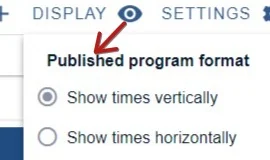
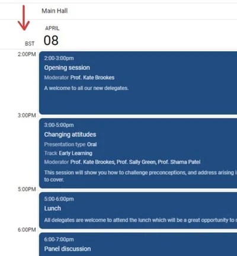
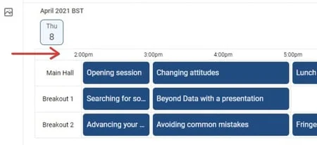
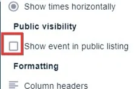
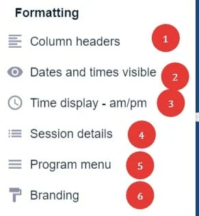
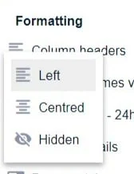
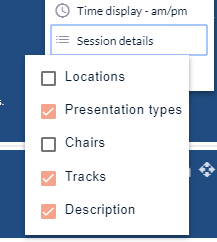
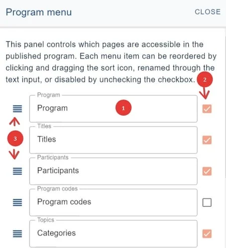
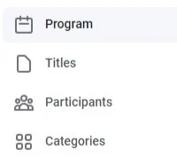

Setting up your program - display
For event organisersNot an organiser?
This article shows you how to set up how some features are displayed and formatted, eg. column headers, dates, time display, menu etc.#
submitter, reviewer, delegate etc), please click here .
Go to Event dashboard → Conference → Program → Builder
The Program Builder screen will open. This is the space where you create your program. You will see a default session in place to get you started. The date will be taken from Event details.
Click onDisplayin the top right of the screen to reveal the features.
NB: Some of these options are only included in the Professional Conference package.
Published program format
You can toggle these on and off to your requirements.

See below for examples.
Vertically

Horizontally

NB: Your program builder view will not reflect these changes but if you preview your program, you will see them.
Public visibility
If the below is checked, a link to your event will appear on the Oxford Abstracts virtual conference portal here: https://virtual.oxfordabstracts.com/

Formatting

6) Branding
1) Column headers
You can select whether you would like your column headers to alignleft, centre, or to hidethem.

2) Dates and times
This is useful if you are holding a virtual conference or wish to keep the program content published after the event.
| Visible | Hidden |
3) Time display
Click on Display →Time displayto change from24h**(default) to am/pm
Your choice will be reflected throughout the program.
4) Session details
This will reveal/ hide the details that you set up when configuring your program.
Check the boxes if you would like these features to appear in your program.

5) Program menu
The Program menu control panel will open up. These are prepopulated with their default names and appear on the menu of your published program. You can
1) Enter your choice of label
2) Check the box for visibility in the program
3) Change the order of menu items.

The settings above will appear as below in the program.


Did this page solve it?
Thanks — this helps us fix it.
Didn't solve it? Ask our support team
No question is too small, and there's no charge for asking. Raise a ticket and someone who knows the software will pick it up.